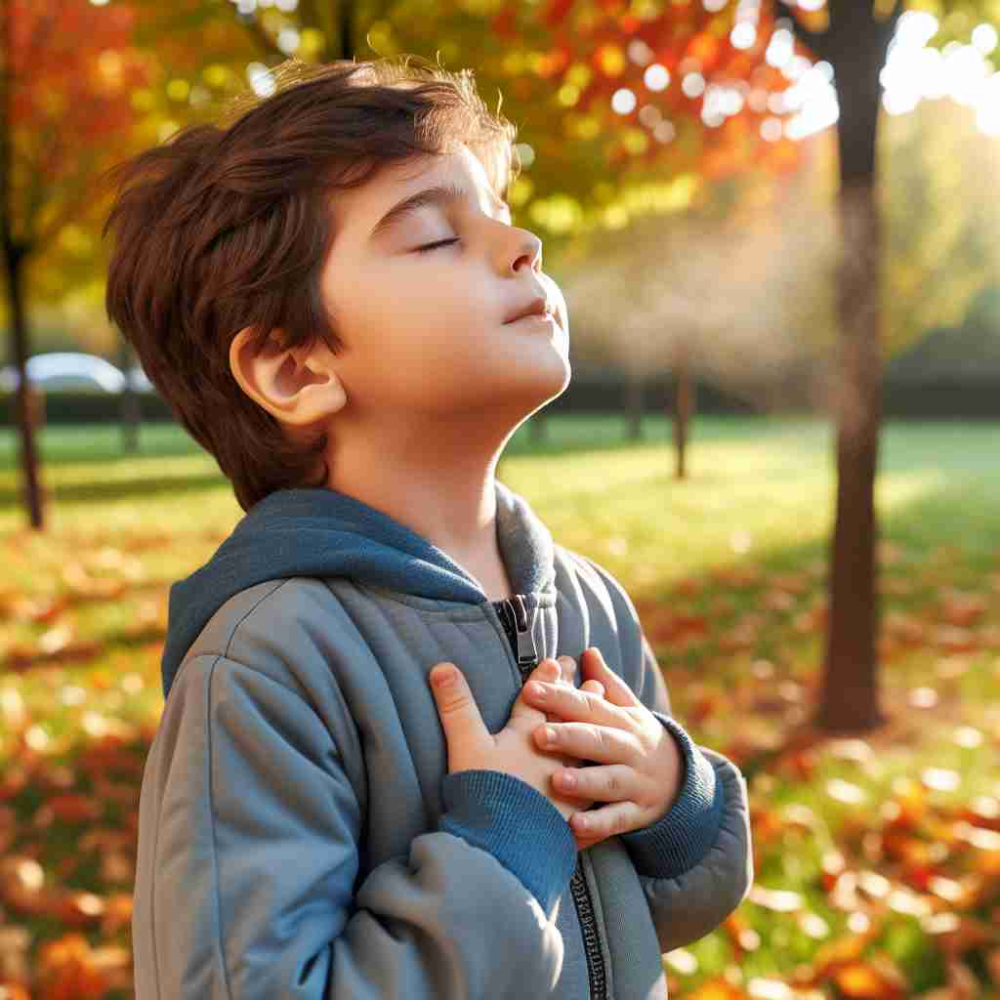

💬 The boy likes to inhale fresh air while enjoying the beautiful day in the park. 男孩喜欢在公园享受美好的一天时呼吸新鲜空气。

💬 Try to inhale deeply to relax your body. 尝试深吸一口气，以放松你的身体。

💬 The person loves to inhale fresh air while enjoying the flowers. 这个人喜欢在欣赏花朵时深吸新鲜空气。